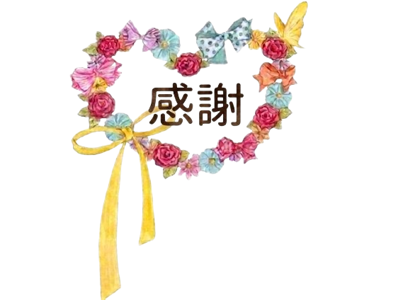

スターバックス商品紹介
- ◆ 目的
- STARBUCKSに行ったことのない人向けに、定番メニューを紹介すること
- ◆ 注力ポイント
- ・JavaScriptを用いてサイトに動きを加え、商品に興味を持ってもらえるよう工夫した
- ・初めて見る人でも商品の魅力が直感的に伝わるよう、写真を大きく配置し、色味はシンプルにまとめて視線が商品に集まるデザインを意識した
- ◆ 使用ツール
- HTML / CSS / JavaScript
yuna sato portfolio
プロフィール
1997年生まれ、高校まで地元北海道で育ち、その後茨城県の大学へ進学。
卒業後は北海道に戻り、保育園などで事務員やバックオフィス業務を経験。
2024年に体調を崩し1年休職後、現在は就労継続支援A型事業所でWebデザイン・動画編集を勉強中。
大切にしていること

学生時代、約13年間新体操に打ち込み、全国大会出場を目標に心技体ともに努力を重ねてきました。 その過程で挫折しそうになった時に「完璧を求めるのではなく、その時のベストを尽くす」というコーチからの言葉が心に深く残り、 今できる最善を尽くすことを考え、希望を捨てずに練習してきました。 支えて下さった方々への感謝を胸に心を込めて本番の演技をやり切り、 観客からの温かい拍手や達成感を得られた経験は今でも忘れられません。感謝の気持ちは、努力を続ける原動力になることを実感しました。
その他資格
事務員としての選択肢を広げる為に、様々な資格取得に挑戦して参りました。